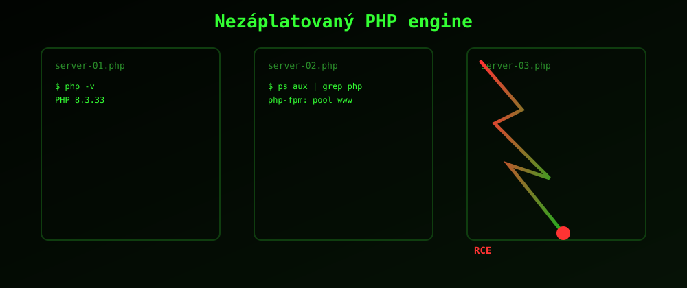

> Dvě kritické chyby v jádru PHP, přezdívané PHP2Shell, umožnily útočníkům spustit vlastní kód na nezáplatovaném serveru bez přihlášení. Detaily unikly ještě před oficiálním záplatováním a zneužití začalo během pár dní.

Co se stalo
V říjnu 2026 unikly informace o dvou zranitelnostech v jádru PHP, CVE-2026-109618
a CVE-2026-109619, společně nazývaných PHP2Shell. Obě umožňují
neautentizované vzdálené spuštění kódu (RCE) a dotýkají se téměř všech verzí PHP od 5.4 až po 8.5,
tedy odhadem až 70 % webu postaveného na PHP.
CVE-2026-109618
CVSS 9.2. Chyba při nedostatku paměti za chodu PHP, která zanechá poloinicializovanou datovou strukturu zneužitelnou v rámci stejného požadavku.
CVE-2026-109619
CVSS 9.2. Zastaralý stav globálních proměnných přežívající přes hranici požadavku, který lze zneužít v dalším requestu na stejném PHP workeru.
Více technických detailů najdeš na podstránce Zranitelnost, doporučené kroky na stránce Ochrana.